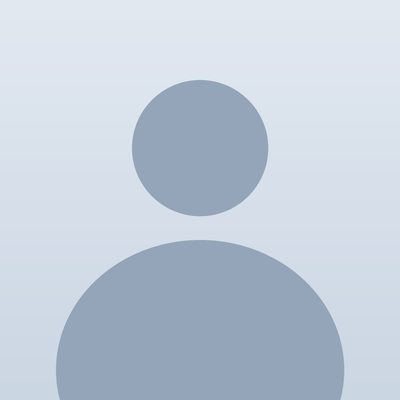
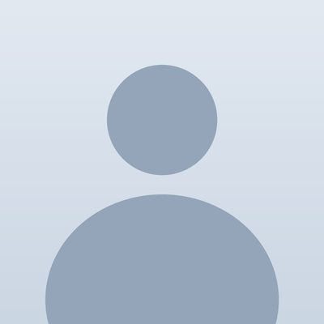
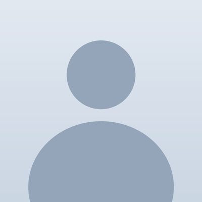
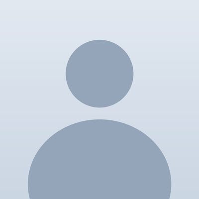
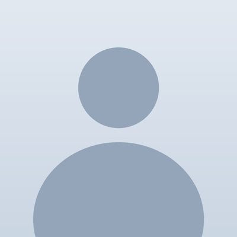
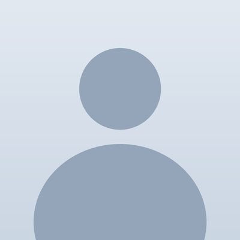
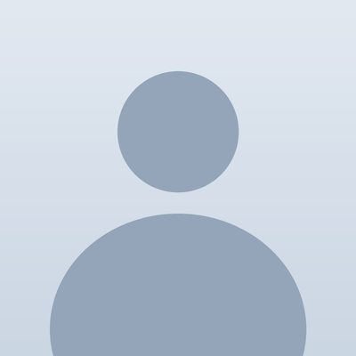
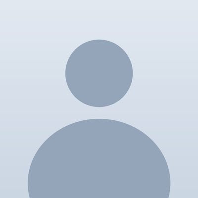
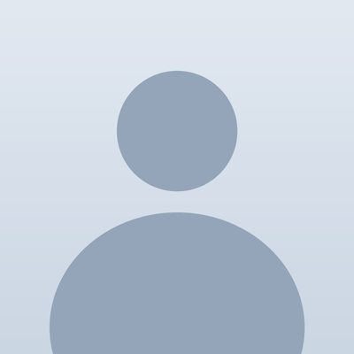
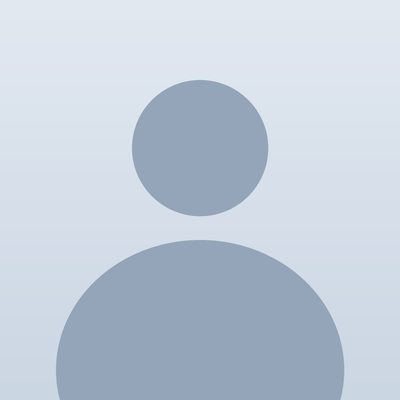

AME LAB
錯覚と多感覚統合（Multisensory Integration）の機序を解明し、
人間の知覚・身体機能を拡張する次世代VR・触覚技術を創出します。
We uncover the mechanisms of illusion and multisensory integration,
and create next-generation VR and haptic technologies that augment human perception and the body.
感覚と身体の限界を超える工学Engineering Beyond the Limits of the Senses and Body
雨宮研究室（AME LAB: Augmented Multisensory Experience Lab）では、クロスモーダル（多感覚相互作用）や経皮電気刺激、錯覚現象を活用した身体性インターフェースの研究開発に取り組んでいます。 AME LAB (Augmented Multisensory Experience Lab) develops embodied interfaces that take advantage of crossmodal (multisensory) interaction, transcutaneous electrical stimulation, and perceptual illusions.
錯覚・クロスモーダル工学Illusion & Crossmodal Engineering
視覚・聴覚・前庭覚・触覚の相互作用によって生じる錯覚現象を数理モデル化し、軽量・非装着型デバイスで強力な体験を生み出します。 We model illusions that arise from interactions among vision, hearing, the vestibular sense and touch, and use them to create powerful experiences with lightweight, non-wearable devices.
移動感・空間ナビゲーション提示Self-Motion & Spatial Navigation Cues
錯覚による牽引感や方向感覚の提示技術を活用し、VR空間や現実空間における直感的な移動支援・歩行感覚・空間ナビゲーション技術を開発しています。 Using illusory pulling sensations and techniques for conveying a sense of direction, we develop intuitive locomotion support, walking sensations and spatial navigation for both virtual and real spaces.
身体性VR・メタバースEmbodied VR & Metaverse
バーチャル空間における自己所有感（Body Ownership）や主体感（Agency）を制御し、身体運動能力の拡張や直感的な遠隔操作を実現します。 We control the sense of body ownership and agency in virtual spaces to augment motor abilities and enable intuitive teleoperation.
研究テーマResearch Themes
身体感覚・錯覚・五感インタフェースの基礎研究から、VR/メタバースを活用した教育・訓練まで幅広く取り組んでいます。 Our work ranges from fundamental research on bodily sensation, illusions and multisensory interfaces to education and training with VR and the metaverse.
- VR/メタバース教育VR/Metaverse Education
- 身体感覚Bodily Sensation
- 錯覚応用工学Illusion-Based Engineering
- 五感インタフェースMultisensory Interfaces
- 経皮電気刺激Transcutaneous Electrical Stimulation
- 疑似体験Simulated Experience
- 行動変容Behavior Change
- 人間情報システムHuman Information Systems
擬似力覚の提示Pseudo-Force Presentation
受容器や身体構造の特性を利用して、従来の装置では表現できなかった力覚を生み出し、他の五感情報と組み合わせる技術を研究しています。 We exploit the properties of sensory receptors and body structure to create force sensations that conventional devices cannot render, and combine them with other sensory information.
腱振動による運動錯覚Kinesthetic Illusions by Tendon Vibration
腱への振動で生じる運動錯覚を、方向や強度などの情報を身体感覚で伝えるUIとして活用するほか、両手で持った物体が伸び縮みして感じられる変形錯覚にも応用しています。 We use movement illusions induced by tendon vibration as a body-based UI that conveys direction and intensity, and apply them to make an object held in both hands feel as if it stretches or shrinks.
VR空間の移動感覚Sense of Walking in VR
座った状態で視覚・前庭感覚・触覚に機械的・電気的刺激を与え、実際に歩かなくても歩いているような感覚を生み出すVR技術を研究しています。 We apply mechanical and electrical stimulation to the visual, vestibular and tactile senses so that seated users feel as if they are walking, without actually walking.
Pseudo-hapticsによる体験の変調Modulating Experience with Pseudo-Haptics
VR内の手の表示を実際の動きより遅らせたり早めたりする視覚操作が、飲み物を飲む体験にどう影響するかを評価しています。 We evaluate how visually delaying or advancing the virtual hand relative to the real one changes the experience of drinking a beverage.
VR・メタバースによる教育Education with VR & the Metaverse
ソーシャルVR空間での講義、見た目を変えたアバタ講師による遠隔講義、脳波などの生体情報から集中度を推定して教材の再生速度を調整する学習支援などに取り組んでいます。 We run lectures in social VR spaces, study remote classes taught by avatar instructors with altered appearances, and build learning support that estimates concentration from EEG and other biosignals to adjust playback speed.
VR訓練システム・教材VR Training Systems & Materials
受講者の理解度に応じて内容を編集できるVR/AR訓練システム、術者視点の360度映像を用いた獣医学教育向けの手術VR教材、消防隊員のVR訓練などを開発しています。 We develop VR/AR training systems that adapt content to each learner's understanding, first-person 360° surgical VR materials for veterinary education, and VR training for firefighters.
配属希望者・企業連携案内For Prospective Students & Partners
当研究室は複数の大学院から学生を受け入れており、研究拠点と講義の主な実施キャンパスが異なります。 We accept students from two graduate schools. Note that our research base and the campuses where most courses are held are different.
浅野キャンパスAsano Campus
情報基盤センター 浅野本館
研究室の実験環境、デスク、プロトタイピング機器はすべて浅野キャンパスに集約されています。日々の研究活動の拠点となります。
Information Technology Center, Asano Main Building
All of the lab's experimental spaces, desks and prototyping equipment are on the Asano Campus, the base of our day-to-day research.
総合文化研究科Graduate School of Arts and Sciences
講義の主な開催地: 駒場キャンパス
広域科学専攻 広域システム科学系で学生を受け入れています。単位取得に必要な講義の多くは駒場キャンパスで開講されます。
Main lecture venue: Komaba Campus
We accept students through the Department of Multi-Disciplinary Sciences, General Systems Studies. Most courses required for credits are held on the Komaba Campus.
学際情報学府Graduate School of Interdisciplinary Information Studies
講義の主な開催地: 本郷キャンパス
学際情報学専攻 先端表現情報学コースで学生を受け入れています。講義は主に本郷キャンパスで実施されます。
Main lecture venue: Hongo Campus
We accept students through the Emerging Design and Informatics Course, Interdisciplinary Information Studies. Courses are mainly held on the Hongo Campus.
メンバーMembers
多様なバックグラウンドを持つ研究者・学生が共創しています。 Researchers and students from diverse backgrounds work together.
Principal Investigator (PI)

雨宮 智浩AMEMIYA Tomohiro
本務：東京大学 情報基盤センター 教授
兼務：東京大学 バーチャルリアリティ教育研究センター 教授・副センター長
大学院学際情報学府・総合文化研究科で学生を受け入れ。バーチャルリアリティ、触覚インタフェース、錯覚応用工学の研究に従事。
Professor, Information Technology Center, The University of Tokyo
Professor and Vice Director (concurrent), Virtual Reality Educational Research Center, The University of Tokyo
Supervises students in the Graduate School of Interdisciplinary Information Studies and the Graduate School of Arts and Sciences. Research interests: virtual reality, haptic interfaces and illusion-based engineering.
スタッフStaff
- 特任准教授Project Associate Professor 青山 一真 AOYAMA Kazuma
-

特任研究員Project Researcher 牛山 奎悟 USHIYAMA Keigo -

特任研究員Project Researcher 小柳 陽光 OYANAGI Akimi -
 客員研究員Visiting Researcher
伊藤 充
ITO Mitsuru
客員研究員Visiting Researcher
伊藤 充
ITO Mitsuru
-
 学術専門職員Academic Support Specialist
栗田 祐輔
KURITA Yusuke
学術専門職員Academic Support Specialist
栗田 祐輔
KURITA Yusuke
-
 特任専門職員Project Specialist
佐久間 明日香
SAKUMA Asuka
特任専門職員Project Specialist
佐久間 明日香
SAKUMA Asuka
学生Students
博士課程Doctoral Course
-
 渡部 理久
WATANABE Riku
学際情報学府Interdisciplinary Info. Studies
渡部 理久
WATANABE Riku
学際情報学府Interdisciplinary Info. Studies
-

何 毅 IZU Takeshi 総合文化研究科Arts and Sciences -
 川島 悠輔
KAWASHIMA Yusuke
学際情報学府Interdisciplinary Info. Studies
川島 悠輔
KAWASHIMA Yusuke
学際情報学府Interdisciplinary Info. Studies
修士課程Master's Course
-
 佐々尾 月陽
SASAO Tsukihi
総合文化研究科Arts and Sciences
佐々尾 月陽
SASAO Tsukihi
総合文化研究科Arts and Sciences
-

志貴 健太 SHIKI Kenta 総合文化研究科Arts and Sciences -

長谷川 雄飛 HASEGAWA Yuhi 学際情報学府Interdisciplinary Info. Studies -

渡邉 政紀 WATANABE Masatoshi 学際情報学府Interdisciplinary Info. Studies -

佐藤 遼一 SATO Ryoichi 総合文化研究科Arts and Sciences -

深谷 太聖 FUKAYA Taisei 総合文化研究科Arts and Sciences -
 塚田 昌孝
TSUKADA Masataka
学際情報学府Interdisciplinary Info. Studies
塚田 昌孝
TSUKADA Masataka
学際情報学府Interdisciplinary Info. Studies
-

三上 日向汰 MIKAMI Hinata 学際情報学府Interdisciplinary Info. Studies
主要論文・学会発表Selected Publications
学術論文誌、国際会議、国内学会・研究会、招待講演の最近の成果から抜粋しています。 Recent selections from journals, international conferences, domestic conferences and invited talks.
-
FEM-Based Optimal Electrode Configuration for Combined Transcutaneous Electrical Nerve Stimulation
Human Interface and the Management of Information (HIMI 2026), held as part of the 28th HCI International Conference, Montreal, Canada, pp. 63–78, July 2026.
-
Bimanual Tendon Vibration Alters Perceived Length of a Statically Held Object
Proceedings of Eurohaptics 2026, Siena, Italy, July 2026.
-
Demonstration of Bimanual Tendon Vibration Alters Perceived Length of a Statically Held Object
Proceedings of Eurohaptics 2026, Siena, Italy, July 2026.
-
Combining Intergroup Contact and Outgroup Embodiment in Virtual Reality: An Exploratory Test of Backfire and Secondary Transfer Effects of Outgroup Embodiment
Computers in Human Behavior, 109094, June 2026.
-
Waterless Virtual Footbath Using Airflow and Thermal Contrast: Design and Exploratory Evaluation of Relaxation-Oriented VR Experience
Frontiers in Virtual Reality, 7:1826083, June 2026.
-
架空都市展示「ない街」における参加型イマーシブ展示の実践報告 ～ 展示構成と来場者アンケートから得られた示唆
電子情報通信学会研究会, IMQ2025-48 IE2025-125 MVE2025-55, 2026.03
-
錯覚が生み出す心と身体の変革
第123回テレコム技術情報セミナー, 一般財団法人テレコム先端技術研究支援センター, Nov. 2025.
-
Effects of Ankle Tendon Electrical Stimulation on Detection Threshold and Applicability of Redirected Walking
IEEE Transactions on Visualization and Computer Graphics, Vol. 31, No. 10, pp. 8956–8968, Oct. 2025.
-
Modulating Perceived Properties of Beverages Through Visuomotor Distortion in Virtual Reality
第30回日本バーチャルリアリティ学会大会, 2025.09
-
腱への非対称振動刺激を用いた指先非拘束型力覚提示手法の提案
第30回日本バーチャルリアリティ学会大会, 2025.09
-
【基調講演】メタバース/VRによる教育訓練の可能性
特定非営利活動法人 M2M･IoT研究会 専門部会セミナー, 藤沢, Oct. 2024.
-
【特別講演】メタバース/VRで変容する心技体
IDW’24 メタバース技術研究会, 東京, Oct. 2024.
* 共同第一著者* Equal contribution
ニュースNews
研究室の最新情報、受賞、学会発表のお知らせです。 Lab updates, awards and conference presentations.
-
受賞Award
雨宮教授が日本VR学会の論文賞を受賞しました。Prof. Amemiya received the Paper Award from the Virtual Reality Society of Japan.
-
受賞Award
三上さん(M1)が触覚若手の会 触覚デモ交流会でベストプレゼンテーション賞を受賞しました。Hinata Mikami (M1) received the Best Presentation Award at the haptics demo exchange of the Young Haptics Researchers' Meeting.
-
学会発表Conference
日本VR学会大会で研究室関連で10件の発表（+2件OS）、触覚若手の会デモ交流会で2件のデモ発表がありました。Lab members gave 10 presentations (plus 2 organized-session talks) at the VRSJ Annual Conference and 2 demos at the Young Haptics Researchers' demo exchange.
-
受賞Award
牛山特任研究員と佐々尾さん(M2)の発表がEurohaptics 2026で Best Demo Award Honorable Mentionを受賞しました。The demo by Project Researcher Keigo Ushiyama and Tsukihi Sasao (M2) received the Best Demo Award Honorable Mention at Eurohaptics 2026.
-
学会発表Conference
Eurohaptics 2026でポスター発表＆デモ発表をしました。We gave poster and demo presentations at Eurohaptics 2026.
-
受賞Award
ラーニングイノベーショングランプリ2026でチームAmelab M2が優秀ラーニングイノベーション賞を受賞しました。Team "Amelab M2" received an Excellent Learning Innovation Award at the Learning Innovation Grand Prix 2026.
アクセス・お問い合わせAccess & Contact
研究室見学、産学連携、取材に関するご相談はお問い合わせ先アドレスまでお願いいたします。 For lab visits, industry collaboration or media inquiries, please contact us by email.
研究室所在地Lab Location
〒113-8658 東京都文京区弥生2-11-16東京大学 浅野キャンパス
情報基盤センター 浅野本館 Information Technology Center, Asano Main Building
Asano Campus, The University of Tokyo
2-11-16 Yayoi, Bunkyo-ku, Tokyo 113-8658, Japan
最寄り駅アクセスNearest Stations
- 千代田線「根津駅」徒歩5分Nezu Sta. (Chiyoda Line): 5 min walk
- 南北線「東大前駅」徒歩10分Todaimae Sta. (Namboku Line): 10 min walk
- 丸ノ内線「本郷三丁目駅」徒歩15分Hongo-sanchome Sta. (Marunouchi Line): 15 min walk
お問い合わせContact
雨宮研究室 事務窓口:Lab office:
info@vr.u-tokyo.ac.jp